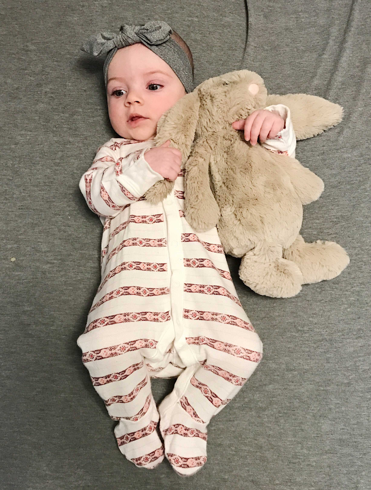

Ainsley is now (well as of tomorrow) six months old and I thought I would give my insight on what products she (or myself) really enjoys currently.
For those of you who know Ainsley, will know that she is a tough nut to crack. She’s not easy to please and for the most part is a little grump! She’s picky when it comes to pretty much everything, definitely a little diva in the making… Uh oh!
That being said here are some things that actually make my little grump and I happy!
Bumbo floor seat
I don’t think I’d be able to survive without this thing. Ainsley HATES laying down, she doesn’t want any part of it. So being able to sit her in the bumbo is a life saver, she loves sitting and watching people in the kitchen, or watching me do my hair!
Lamaze toys
These toys are super colourful, crinkly, squeaky, and have lots of different textures! Ainsley has a variety of them and honestly loves them all, but loves her moose toy the most!
We bring her moose everywhere!
Water bottles
The happiest I ever see Ainsley is when I’m drinking from a plastic water bottle. She gets so excited she starts waving her hands! Whenever I’m done with my water bottle I always let her have it, she’ll chew it and crinkle it until her hearts content.
Avent Soothers
Miss Ainsley has been the pickiest of picky when it comes to soothers, but finally she took to the Avent brand. She loves these because they are long and straight, they don’t curve like a lot of soothers out there!
Dr. Brown Wide Neck Glass Bottles
The one and only bottle Ainsley will take, is this one. I’ve had no issues with them leaking on her while she eats and I find them super easy to take apart to wash!
Boon Grass with Accessories
I love this product! Not to mention how cute it looks on the counter, but is super convenient to keep all your bottles and baby feeding equipment all together after it’s washed.
Plastic Bibs
Like all babies, Ainsley is an extremely messy eater. Especially since she’s now started this new thing where she thinks it’s hilarious to spit her food at me and get it absolutely everywhere! These are so easy to clean and cover much more than cloth bibs.
Exersaucer
Ainsley is finally getting to the age where she is interacting with her exersaucer! She gets so excited by some of the toys and is learning to hit, push, and play!
Those are the main things I can think of that Ainsley and/or I are currently loving! I would love to hear things that your baby enjoys around this age, or things that you as a parent love.
Stay tuned for tomorrow’s post that will be her 6 month update!
Mom Shaming
If you’re a mom you know the act of Mom shaming all too well. If you aren’t a Mom you might be subject to doing this to Moms as well without even realising.
Mom shaming, defined (according to urban dictionary) as; “Criticizing or degrading a mother for her parenting choices because they differ from the choices the shamer would make.”
As a younger Mom I face a lot of Mom shame from older Moms. Not to get confused with advice, lots of moms offer very friendly advice on things I may not know about. And that is way different than mom shaming, advice is nice and sometimes desperately needed when I’ve tried all avenues on something.
Mom shaming comes on topics such as vaccinations, breastfeeding, diet choices, and many more but these are the hottest of topics that I’ve seen.
In no way do I think Mom shaming is ever acceptable because every kid is different, every family is different, and every situation is different. What works for one kid may not work for another and that’s what Moms need to realise. There is no wrong way to parent in my opinion, if it works for you, and your baby is happy and healthy then you’re doing great sweetie.
Now I shouldn’t have to point out the obvious but I will just for all those people out there who may wonder, but OBVIOUSLY child health and safety comes first. But if what your doing is working for your little one and they are healthy then it’s no other persons place to comment or judge you for doing so.
A prime example is the amount of people who judge me for letting Ainsley sleep with a blanket because it’s “dangerous.” She has slept with a blanket from day one and had no issues, she can’t sleep without one. She likes to feel safe and cozy yet hates swaddling. So if a blanket is what makes her happy and helps her sleep you best bet I’ll let her sleep with it. Whenever someone tells me about the dangers of things in the crib I just smile and nod and say “Yes I’m aware.” Because I am, I’m well researched in baby safety but it’s my decision to let her sleep with a blanket. If I truely thought it was a danger to Ainsley, I wouldn’t allow it.
Us Moms have enough stress and things to worry about in regards to raising our little people, the last thing we need is to feel shamed by other Moms. We as Moms need to create a safe and welcoming community that fosters acceptance for all types of Moms and offers support when it’s needed.
Its okay to have differing opinions on topics, that’s what makes us all unique. What’s not okay is to try to make someone feel bad about their decision or try to convince someone that your opinion is better. You may not agree with the decisions of all Moms and frankly, it’d be weird if you did! But that doesn’t mean you need to judge them or shame them, because like I previously stated, you don’t know their child or their situation. What you think is best may not be the case for their child.
Parenting is so unique and so different on a case to case basis. No two parents will have the same opinions and values, and we need to be more open and accepting of that.
As Moms our main priority is our children, we want what’s best for them, and at the end of the day we will always make our decisions accordingly.
All that being said , I am not claiming I know everything about parenting because that’s far from the truth, like I said I welcome friendly advice! Especially if I reach out for it. But generally if I need help, advice, or an opinion, trust me I’ll ask. If not just trust that I as a Mother am doing what’s best for my child. As young and new as I may be my to this momming game, my baby is my world; I do all I can to educate myself and make the best decisions possible for her. And I trust that other Moms do the same.
Moral of this post, don’t be one of those judgey mean Moms that no one likes. You don’t know what’s best for every kid in the world so give it a rest. You have no right to shame other Moms on how they parent. How about we all respect and value differing opinions and try to learn from them. Being a Mom is hard enough, let’s not make it any harder on ourselves and others by being a (excuse my language) dick.
Everybody love everybody!
Cold Hard Wean
It’s been a hectic week to say the least. Hence the no blog posts which I apologise for, but I’m back now that things have settled.
This past week has involved transitioning little A onto the bottle. As much as I loved the convenience of breastfeeding I could tell she wasn’t getting enough to eat. She was constantly hungry, always crying, wanting to feed every hour (sometimes less.) And she was on the lower end of weight for her age and was having trouble gaining steadily. It was mentally and physically draining to have a constantly unhappy baby
That being said this wasn’t my first time trying to introduce her to the bottle. Ideally I would have liked to do both, breastfeed and bottle feed. But Ainsley wasn’t going to have that, we had to cut the breastfeeding entirely out.
There’s no way she was taking a bottle from me to start, she’s too smart for that. She knows I have milk and wasn’t gonna let up till she got what she wanted. I decided to do a hard wean, quit breastfeeding cold turkey, so essentially she would have no choice but to take a bottle. So my Mom (god bless her soul) took Ainsley for a full 24 hours without me to get her on the bottle. She didn’t take much at first, but it was a start!
When she came back to me after the 24 hours that’s when the real work began! She fought it and fought it, it took a lot of shoving a bottle in her mouth for her to finally give in and suck but when she did hallelujah!
The bottle that finally did the trick was the Dr. Brown’s wide neck glass bottle, out of the 12 I have tried this is the ONLY one she will take. As for formula she drinks Nestle Goodstart stage one.
These past five days have been a world of difference, she is so much happier. I can tell she is so much more full, she doesn’t cry or fuss all the time now. She goes about four hours between bottles, but has puréed food in between to satiate her!
As much as I enjoyed breastfeeding and am a little sad to not have that bond anymore I am so glad to finally have a happy baby!
On top of a bottle, this week was also the week of the pacifier. It took a lot of (and still does) holding it in her mouth and basically giving her no option but to suck it. Sounds cruel but without breastfeeding she needs a way to soothe herself. The pacifier she finally took to was the Avent ones, if anyone has any suggestions of what to do with the other 20 she hated, send them my way!
She’s been such a trooper with all these changes, and I’m so happy it went relatively smoothly. She’s still adjusting to the fact she can’t sooth herself by nursing but she’s doing so well! And for what it’s worth I am much happier as well, not dealing with constant crying is a huge relief, oh and FINALLY being able to enjoy a glass (or two) of wine is not to bad either.
I know the cold turkey weaning process is not for everyone but she wouldn’t take a bottle any other way! After trying the traditional weaning methods and bottle introductions this is what worked for us, it may seem a little harsh but I’ve never seen her happier!
Now that I’ve got a schedule under wraps I’ll be back to daily blogging! Like always if you have any suggestions for blog posts comment them below or send me a message!
Ainsley’s 5 Month Update
I figured a good way to keep tabs on Ainsley’s month to month updates for not only myself to look back on, but for all of our family and friends who are interested in what’s going on with little miss is to write it all down here!
Ainsley turned five whole months on a October 30th, and honestly I had to fight back tears. It’s so unreal that she’s been with us for almost half a year. It feels like just yesterday I was bitching and complaining about how over due she was…
These past five months have been filled with a lot of love and a lot of tears (from both of us.)
As much as I love this child with my whole heart, she’s a grumpy little bear.
This past month has been the most challenging of them all. Ainsley is constantly needing someone’s full undivided attention or girl is ready to scream, and when I say scream I don’t use that term lightly. She’s got a set of lungs on her that’s for sure. This makes getting much (if anything) done very difficult, thankfully I have help from my family so I can take the occasional shower…
Luckily, she’s not overly picky as to who plays with her (although she prefers it to be Mommy of course) she just does not want to entertain herself.
Ainsley will not take a soother, no matter how hard I try she just does not want anything to do with them. I have a container of I think around 30… Given she’ll chew or suck just about anything else so, theres that.
Ainsley is also still rejecting any type of bottle. I have about 10 different types of bottles, so now that we’ve found a formula she doesn’t completely spit out (nestle goodstart) my goal is to find a bottle she’ll actually suck on and not just bite. My goal is to get her off the boob as she’s not gaining much weight anymore. We have introduced solids which she loves but obviously at this age milk/formula is most important form of nutrition.
On the topic of weight as of yesterday at the doctors Ainsley weighed in at 13.86lbs and 40cm tall!
For the most part she’s grumpy, unless she’s being held in a standing position, she loves to stand. She hates being laid on her back or stomach but if you stand her up she’ll give you a big ol smile accompanied with some happy stomps.
As for sleep, being back in Canada really screwed her schedule up. But for the most part she sleeps at around 9:30pm till 8am waking up once or twice to eat during the night! She’s not a fan of naps but I try to get her to nap twice a day.
On the rare occasion Ainsley isint grumpy she enjoys being in her jolly jumper, standing against the couch (whilst screaming at it,) going for walks, being naked, eating, watching football (or anything on the TV that moves for that matter,) chewing anything and everything she can get her slobber covered hands on, the sound of plastic water bottles, oh and we can’t forget her absolute fav; Mamma’s boobs!
Although she’s a handful, and not always the happiest baby, she’s my little grump! Days are long and hard but the minutes I get smiles and laughs make it all worth it.

So What Do You Do…?
“So what do you do?” Is a question that’s hard for me to answer. I’m a Mom, but I can’t help but feel like that is an inadequate answer.
Being a full time stay at home Mom is absolutely amazing. By far the most rewarding job I’ve ever had. I get to spend everyday with my little, watch her grow, and see every little change that happens from day to day.
Don’t get me wrong, I am so lucky to be able to stay at home with her. And do not want this blog to come across as complaining; but sometimes I can’t help but just feel useless.
Everywhere I look on social media whether it be Facebook or Instagram, I see so many hardworking Moms out there going to a day job, working nights, working from home, or running their own business.
I can’t help but feel like I should be doing something more than just being a Mom.
Yes, I know it sounds ridiculous.
I know I’m doing my job as a full time Mamma and doing the best I can for Ainsley. But I would love to contribute to our family financially and have the feeling like I’m doing something more productive than just staying at home all day.
Bringing in my own income and doing something productive would give me a feeling of purpose.
Since Ainsley is still breastfed and a little too young for daycare I would love to find something to do at home. Now I don’t want to be that annoying Facebook Mom pushing useless products to people which is why I haven’t hopped on the lipsense or scentsy train. But I wouldn’t mind finding a product that I sincerely love to sell.
Eventually I’ll be going back to school and finishing my degree so I can work full time but in the meantime I would really like to find something to do.
There’s nothing wrong with being a stay at home Mom, and there’s nothing wrong with being a working Mom. Both are amazing in their own ways
Its hard to not have my own source of income, I hate feeling dependant on people. I’ve always been the independent type and hardworking so by not having that aspect of life I feel a little lost. Learning to adjust to being a stay at home Mom has been hard!
I’m doing my best to accept the fact I’m a Mom and what I’m doing is enough.
That being said I hope to find my feet sometime soon. Whether that be my own at home venture, going back to school, or working part time.
Whatever it may be, in the mean time I will do my best to be in the moment and enjoy the days I have with my Little.
My favourite job; being her Mamma!
Baby’s First Christmas Presents
The closer Christmas gets the more I’m at war with myself of what to do. Ainsley will only be seven months so obviously not old enough to remember or even really have any clue about what’s going on. But I still want to make it special (mostly for my sake let’s be honest.)
My boyfriend and I have decided to mainly get Ainsley things she needs, things we were going to buy her regardless and just wrap them up for Christmas. Of course along with a couple things that aren’t technically necessary because come on, its Christmas.
We’ve bought her a super cute Christmas outfit (pictures to come) so honestly the thing I’m most excited for is to dress her up and spend time with our friends and family!
There’s no need to break the bank on a Christmas she will never remember or even understand so if you’re like me and have a younger babe this Christmas here are some ideas of what we’re getting Ainsley this year. Hopefully this gives some inspiration to you Moms out there who are as stuck as I was!
Highchair
Now that Ainsley is starting to enter the world of food, we thought a great gift would be a highchair! It’s something we were going to buy her anyways, so might as well wrap it up for Christmas! Here’s the one we decided on;
Blames high chair from IKEA $89
Baby Bowls
Along with her highchair she’s going to need some things to eat out of! These are the bowls I’ve picked out for Ainsley! I found these on Amazon, and they’re awesome because they stick right to the tray to reduce mess!
Found these on Amazon for $15.99
A Special friend
Every kid always has a special stuffed animal friend, we would love to have Ainsley find the perfect stuffed friend to be attached to so here are the two we chose.
The first toy is from a brand called Slumberkins, each stuffed animal comes with a special intention and own personal mantra. The fox is the one we chose for Ainsley because the fox stands for change (and she’s been through a lot of change in her short time here,) but there are also sloths, sharks, yetis, and even a Bigfoot, all with their own special meaning.
Slumberkin Fox in colour “rose” $48
The second was curtesy of Ainsley’s Grandma! She read my mind, because I wanted to buy Ainsley one of these anyways- so thanks Grandma Caz
Cuddle + Kind “Willow the Deer” $59-$79
This toy comes from a brand called Cuddle + Kind I absolutely love this brand, for every stuffie purchased, the company donates 10 meals to children in North America and around the world! These stuffed animals are handmade and fair trade! Each animal comes with a birthday, little story, and favourite quote! There are a ton of variety of animals and they also come in a large and small size. Ainsley’s Grandma picked out this one for her (my personal favourite as well.)
Jolly Jumper
Ainsley won’t sit or lay longer than five minutes so this was a must! This gift is curtesy of her Grandpa, so thank you to him!
Black Jolly Jumper $50
This is a great gift for your baby if (like Ainsley) they can’t sit still and hate being in any position other than standing.
Clothing
By the time Christmas rolls around Ainsley should be in size 6-12 month clothing, so she’ll need some new stuff! She’s currently still in some 0-3 and 3-6! And we are not prepared for 6-12, she has a few things but certainly not enough. So we may as well wrap them up for Christmas
We haven’t bought her any clothes yet but some of my favourite baby clothing stores are old navy, cotton on, carters, and bonds! They are all reasonably affordable and have super cute things.
So far that’s all we plan to give Ainsley! Hopefully this gives you some inspiration on what to get your little one if you’re stuck!
Remember Christmas isint about what you get your babes, it’s about making memories and spending quality time with them! Because in all honestly I’m sure you could wrap up toys they already own and they’d be just as clueless.
Make Time for Yourself Mamma
Mom is a title I wear on my sleeve loud and proud. It is my greatest achievement in life and my number one priority. But that being said I’m more than just a Mom.
I think as Moms it is important not to lose yourself or forget the things that make you, you. Finding time for yourself, for things you enjoy, and for the little things that make you happy is crucial in keeping your sanity as a Mom.
Spending all day, every day, 365 days a year catering to your kids will drive you to insanity. You need time for self care, time to de-stress, and quality time for just your boyfriend/husband/baby daddy and yourself.
I realise as a Mom (especially of a baby) it seems damn near impossible to find more than five minutes to yourself. And not only lack of time but we all face the dreaded Mom guilt. Feeling like we’re letting our kids down, being selfish, or making the wrong choice.
But I’m here to say, embrace the Mom guilt! It’s okay to be a little selfish, and to take some time for yourself, you work hard! And ultimately taking time for yourself will make you happier and less stressed which I’m sure your kids (and partner) will appreciate. My boyfriend can vouch for this because I turn into one grumpy Mamma when I go too long cooped up at home, spending every waking minute with the baby and neglecting myself.
As for the lack of time, self care doesn’t always have to be an entire weekend away from the kids. It can be as simple as passing off the baby to your husband so you can take a bath and put on a face mask! Or even dropping the kids at grandmas for two hours to grab a coffee or dessert with your boyfriend! Even doing something small you love everyday, whether that be spending time on your makeup, doing your hair nice, or in my case blogging. Simple things like this can make a huge difference.
For example, being a stay at home Mom I started this blog as something just for me. I love to write and even though yes, I could be spending the time I put into these posts playing with my daughter, cleaning the house, doing laundry (the list goes on,) writing makes me happy and gives me time to focus on my thoughts and feelings. It’s something I love to do so why just because I’m a Mom should I stop?
Another thing that I love is when my boyfriend and I drop Ainsley off with her grandma and go out baby-less. It’s not for too long, but grabbing coffee, catching up, and just spending quality time together talking by ourselves is so incredibly important to us and our relationship. It makes us happy, and gives us a little break from Bubs that is sometimes needed! Oh and gets me out of the house, which if you’re a stay at home Mom like me will get you very excited.
There should be no shame in doing things for yourself as a Mom. Just because you’re a Mom doesn’t mean you aren’t still human. Take time to get your nails done, go to the gym, go out for drinks with your friends, read a chapter of your favourite book. Do something solely for the fact it makes you happy.
Us Moms do a lot for our kids and at the end of the day taking some time for ourselves is not the end of the world and speaking from experience makes me a lot happier of a person.
Do something you love today Mamma’s, you deserve it!
Baby Products; The Good, The Bad, The Useless
It seems like everywhere I look someone is having a baby! It’s every new Moms instinct to buy every little gadget or product marketed for baby’s because well they obviously need it, right? False. Let me be the first to tell you I hoped on the train of buying every little thing I thought my baby needed even though so many experienced Moms told me not to. But seriously listen to me; SAVE YOUR MONEY.
That being said there are some very useful baby products. So in this post I’ll be telling you baby products I loved, the products I wish I would’ve waited on and products that were just downright useless!
I’ll start off on a positive note and give you guys my favourite baby products I found (and still find) useful, keep in mind I have a 5 month old.
Nursing Pillow
If you plan to nurse (or at least try) invest in one of these pronto. It will save you a ton of struggle, seriously! A bonus is it can also be used for tummy time or to prop your little one up to sit! The one I use is made by jolly jumper and is great, the only downside is it does not have a washable cover so in hindsight I would’ve looked for that because blowouts and spit up do happen (more than I thought clearly.)
Again if you plan to nurse invest in a quality nursing bra. Although very grandma looking you will be super comfy and whipping out your boob to nurse will be much easier.
This is my favourite nursing bra it comes in a bunch of colours: Nursing Bra
Zipper Sleepers
Because at 3am no one wants to be fussing around with a billion buttons. Zip up sleepers are a life saver and a world more convenient for quick diaper changes over the button up sleepers. 99% of the time my daughter lives in these because they’re comfy and convenient and I don’t want to fuss her into outfits if we just plan on lounging!
My favourite are from old navy, super soft and pretty much always on sale: Zip Up Sleeper
Travel System
Having a car seat that I can move from the car right to the stroller has been a blessing. I’m sure I’m not the only Mom who dreads waking their sleeping baby by removing them from the coziness that is their car seat. My babe loves to fall asleep in the car and/or while we’re walking so by eliminating the car to stroller transition this allows her to just keep napping. Especially handy when we’re doing errands and jumping from store to store!
This is the stroller and car seat duo I have and love: Travel System
Crinkle Toys
Nothing keeps my babe entertained for long but one thing she does love is chewing and tugging crinkle toys! The sound intrigues her more than any other toy she has including her $25 Lamaze toys (sigh.) Bonus is you can find these for super cheap like the ones I have off amazon, they also have little textured plastic pieces for all the teething babes out there!
Now that I’ve listed some of my baby must haves here are the products that didn’t work for me! Keep in mind every baby is different and what doesn’t work for me may work for you.
Pacifiers
Before Ainsley was born I stocked up on all sorts of pacifiers, like I’m talking around 25 pacifiers… Guess who’s baby ended up hating them? Yup. Mine! I could not get her to take any one of the many I had, no matter what I tried she just hated them all! My advice with pacifiers is WAIT. Until you know if your babe will take them or not, just hold off spending a ton on pacifiers or you’ll end up like me with a jar full of useless suckies.
Nursing Covers
I’m all for nursing in public cause when my girls hungry she’s hungry and nothing will soothe her till she gets her boob lemme tell ya… But one thing I purchased that I NEVER used was a nursing cover. I tried it at first but honestly it was annoying, made me hot, and my babe hated having it covering her face (since she enjoys staring at me while eating.) I found it so much easier and enjoyable to just wear nursing friendly clothing that kept me somewhat covered or to just not give a shit.
Velcro Swaddles
Great idea in theory, but this is another thing I would advise waiting on! Just like pacifiers and bottles Ainsley hated being swaddled! She would find a way every time to wiggle her little arms out or just cry till we unleashed her limbs. Some baby’s hate it and some love it, so before you buy the fancy expensive swaddles make sure your little one is going to get use out of them (unlike my diva child.)
Now that I’ve told you the things that completely failed for me here are the baby products that (in my opinion) are completely useless.
Baby Shoes
I know how tempting cute little baby shoes are but trust me you don’t need them nor will your little one keep them on. I bought Ainsley a few pairs of adorable little shoes and they were not worth the fight. Once I finally got them on they’d be gone in about five minutes… Save your money and buy them shoes once they can walk and actually need them.
Wipe Warmer
It’s a butt, it doesn’t need specially warmed up wipes. I have nothing more to say about that.
Baby bathrobes
Although adorable, they are extremely useless and inconvenient. Hooded towels do the job just fine, no sense wrangling your wet infant into a robe.
Pacifier/toy Santizing Wipes
Yes I bought these and yes I feel like an idiot. The package is 99% full still because realistically I just run anything that falls under hot water or stick it in my own mouth and tadda!
And there ya go! There’s my take on my favourites, what didint work for me, and what were just plain dumb. Feel free to share your loves and hates in the comments below!